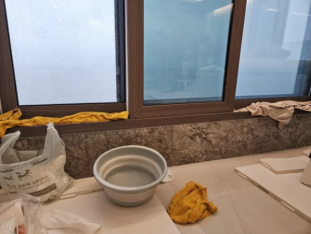
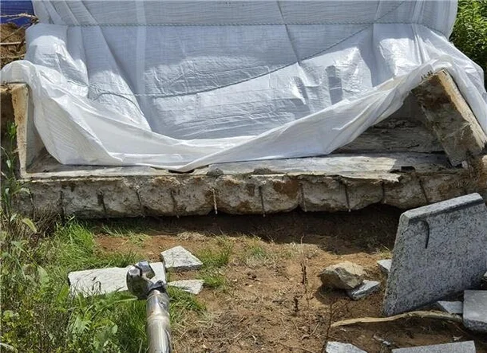

"10억짜리 집 맞아?"…발코니 붕괴에 물난리 난 아파트 어디 : 네이트 뉴스


19일 인천 송도 럭스오션SK뷰 입주민 비상대책위원회에 따르면, 전날 내린 폭우로 이 아파트에서 100가구 이상의 침수 피해 신고가 접수됐다.
기상청에 따르면 당시 인천 연수구 송도동의 누적 강수량은 40㎜였다.
입주민들은 창문을 모두 닫아둔 상태에서도 빗물이 창틀을 통해 집 안으로 들어왔다고 주장했다.
일부 세대에서는 창틀을 넘어 들어온 빗물이 바닥에 고이고, 시멘트 균열 부위에서 누수가 발생해 원목마루가 젖는 등 피해가 잇따른 것으로 전해졌다.
비대위는 이번 피해가 특정 동이나 층에 국한되지 않고 저층부터 고층까지 단지 곳곳에서 동시다발적으로 발생했다고 설명했다.
비대위는 비가 내리던 당일 서비스센터와 연락이 닿지 않았으며, 시공사인 SK에코플랜트 관계자들에게 피해 상황을 알리고 소통을 요청했지만 즉각적인 대응이 이뤄지지 않았다고 주장했다.
비대위 측은 “누수는 수차례 보수에도 2년째 해결되지 않고 있으며, 임시방편식 땜질 처방이 결국 100세대 물바다 사태를 초래했다”며 “테라스 붕괴에 이은 집단 침수 사태는 SK에코플랜트의 총체적 부실시공을 증명하는 것”이라고 비판했다.
해당 아파트는 불과 두 달 전에도 발코니 붕괴 사고로 논란이 됐던 곳이다.
지난 8월 7일 이 아파트의 한 동 2층에서 발코니 구조물과 외장재가 건물 외벽에서 떨어져 나가는 사고가 발생했다.
당시 사고가 발생한 세대는 입주하지 않은 상태여서 다행히 인명 피해는 없었다.
해당 아파트는 SK에코플랜트가 시공한 1,114가구 규모의 아파트로, 지난해 2월 준공돼 3월부터 입주가 시작됐다.
2022년 최초 분양 당시 전용면적 84㎡의 분양가는 8억2,700만~9억1,900만원이었다.
전용 96㎡는 10억8,300만원, 104㎡는 12억4,600만원에 공급됐으며 일부 대형 주택형의 분양가는 18억원을 넘어서기도 했다.

왐마 니기럴거 내 살다살다